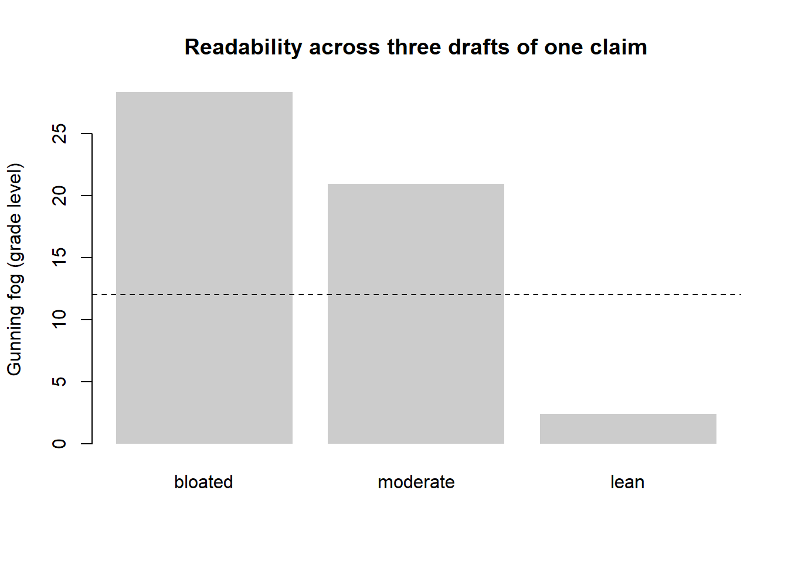

| Section | Words | Purpose | Default tense |
|---|---|---|---|
| Title | 8–15 | Name the contribution | — |
| Abstract | 200–250 | Self-contained summary: objective, method, finding, implication | Past + present |
| Introduction | 800–1200 | Why the paper exists; the gap and the contribution | Present + present perfect |
| Literature / Theory | 1500–3000 | Position vs. prior work; derive hypotheses or model | Present + present perfect |
| Methods | 1000–2500 | What was done, reproducibly | Past |
| Results | 1000–2500 | What was found, with the data doing the talking | Past + present |
| Discussion | 1500–2500 | What it means, limits, boundary conditions | Present + past |
| Conclusion | 400–800 | Restate contribution; implications and future work | Present |
47 Scientific Writing
A research paper is the instrument through which a discovery becomes knowledge. A result that is not written down does not exist scientifically; a result written badly exists only for the handful of readers willing to excavate it. This chapter treats scientific writing not as cosmetic polish applied after the “real” work but as an integral part of the research itself—a design problem with its own constraints, its own failure modes, and its own measurable quality. The audience is the marketing scholar who has a finding and now faces the harder task of convincing a skeptical editor, two or three adversarial reviewers, and an indifferent field that the finding is correct, novel, and important.
The economics of the situation are unforgiving. The top journals in marketing—the Journal of Marketing (JM), the Journal of Marketing Research (JMR), Marketing Science, and the Journal of Consumer Research (JCR), collectively the “top-4”—desk-reject a large share of submissions and ultimately accept only a small fraction of what is sent to them. A reviewer reads dozens of papers a year as unpaid labor and forms a judgment within the first few pages. The paper that survives is not merely the one with the best result; it is the one whose argument the reviewer can reconstruct without effort and whose contribution the reviewer can state in a sentence. Writing is therefore a competitive technology, and this chapter develops it as one.
The chapter proceeds from architecture to sentence. We begin with the structure of a paper—the canonical section sequence and what each section is for—and formalize the underlying logical scaffold. We then treat the hardest and most consequential task, framing the contribution, and the part of the paper where framing lives or dies: the front end (title, abstract, introduction). We turn next to the specific demands of writing for the top-4, where the contribution bar is highest. We close with clarity and revision: the sentence-level craft that makes an argument legible, the measurement of readability, and the disciplined process of responding to reviewers. Throughout, the stance is the house stance— intuition first, then the formal structure that makes the intuition operational.
47.1 The Structure of a Paper
47.1.1 The canonical sections and their tenses
Empirical marketing papers share a near-universal skeleton, sometimes abbreviated IMRaD (Introduction, Methods, Results, and Discussion) with literature review and conclusions bracketing the core. Each section answers one question and only one, and—this is a point novices routinely miss—each section has a default verb tense that signals the epistemic status of its claims. Completed actions take the simple past (“we estimated”, “respondents rated”); established knowledge and the paper’s own ongoing argument take the present (“the effect is”, “Table 2 reports”); prior literature as a stream that continues into the present takes the present perfect (“researchers have shown”). Table 47.1 collects the sections, their purposes, approximate lengths, and tense conventions.
The discipline of one-question-per-section is what gives a paper its navigability. A reader who wants to know what you did turns to Methods and finds only that; a reader who wants to know why it matters turns to the Discussion and is not detained by procedure. Violations—results smuggled into the methods, mechanism speculation buried in the results—are the most common structural defect flagged in review, because they force the reader to hold the paper’s logic in their head rather than read it off the page.
A scientific paper is not a chronological record of what the researcher did. It is a reconstructed argument, organized so that the reader can verify the conclusion with minimum effort. The order of discovery and the order of exposition are different things, and conflating them is the surest route to an unreadable manuscript.
47.1.2 The argument as a logical object
Underneath the section skeleton sits a logical scaffold that the prose merely dresses. Make it explicit. A confirmatory empirical paper advances a chain
\[ \underbrace{P}_{\text{problem}} \;\Rightarrow\; \underbrace{G}_{\text{gap}} \;\Rightarrow\; \underbrace{H}_{\text{hypotheses}} \;\Rightarrow\; \underbrace{D}_{\text{design}} \;\Rightarrow\; \underbrace{R}_{\text{results}} \;\Rightarrow\; \underbrace{C}_{\text{contribution}} \tag{47.1}\]
in which every arrow is a claim the reader can refuse to grant. The problem \(P\) must be real (someone cares about the answer); the gap \(G\) must be genuine (the answer is not already known); the hypotheses \(H\) must follow from a theory and be falsifiable; the design \(D\) must be capable of discriminating \(H\) from its negation; the results \(R\) must actually bear on \(H\); and the contribution \(C\) must be what \(R\) licenses, not more. A paper fails at whichever arrow is weakest, and the writing task is to make each arrow as short and as forced as possible. Many rejections that are phrased as “not enough contribution” are in fact broken arrows: a gap that turns out to be already filled (\(G\)), or a design that cannot separate the focal hypothesis from a confound (\(D \not\Rightarrow R\)).
The conceptual or theory paper substitutes a different chain—a construct is defined, related to existing constructs, and shown to do explanatory work—but the demand for unbroken arrows is identical. Figure 47.1 renders the canonical flow and shows where each link in Equation 47.1 is forged.
flowchart TD
A["Title<br/><i>names the contribution</i>"] --> B["Abstract<br/><i>P → R → C in 250 words</i>"]
B --> C["Introduction<br/><i>problem P, gap G,<br/>promised contribution C</i>"]
C --> D["Theory / Literature<br/><i>position; derive H</i>"]
D --> E["Methods<br/><i>design D</i>"]
E --> F["Results<br/><i>evidence R</i>"]
F --> G["Discussion<br/><i>does R license C?</i>"]
G --> H["Conclusion<br/><i>restate C; boundaries</i>"]
C -.->|"promise"| G
H -.->|"payoff"| C
style C fill:#e8f0fe,stroke:#1a73e8
style G fill:#e8f0fe,stroke:#1a73e8
The dashed promise–payoff loop in Figure 47.1 is the structural heart of a paper. The introduction makes a promise—“we will show that \(X\) causes \(Y\) through mechanism \(M\)”—and the discussion must redeem exactly that promise, no more and no less. A paper that promises a causal claim and delivers a correlation, or that delivers a richer finding than it promised and never updates the framing, reads as incoherent even when every individual sentence is sound.
47.1.3 Paper types
The skeleton flexes with the paper’s type, and naming the type early orients both writer and reviewer. Four types recur. A research paper tests hypotheses and reports findings; its contribution lives in \(H \Rightarrow R\). A methods paper proposes a new estimator, design, or measurement instrument; its contribution is that the method recovers something prior methods could not, so the burden is a demonstration—often on synthetic data with known ground truth—that it works and a comparison against incumbents. A review paper consolidates a domain, and its contribution is organization: a taxonomy, an integrative framework, or an agenda that practitioners and scholars did not previously have. A conceptual or discussion paper advances or critiques theory, trading empirical evidence for argumentative rigor. The reviewer evaluates each type against a different standard, and a paper that does not signal its type invites evaluation against the wrong one.
47.2 Framing the Contribution
47.2.1 What a contribution is
The single most important sentence in a paper is the one that states its contribution, and the most common reason good work is rejected is that this sentence is missing, vague, or overclaimed. Define the contribution formally. Let \(\mathcal{K}\) denote the field’s existing knowledge—the set of claims a competent reader already accepts before reading the paper. A paper’s contribution is the increment
\[ \Delta\mathcal{K} \;=\; \mathcal{K}_{\text{after}} \setminus \mathcal{K}_{\text{before}}, \tag{47.2}\]
the set of claims that a reader is licensed to accept after reading the paper and was not licensed to accept before. Three properties make \(\Delta\mathcal{K}\) publishable, and reviewers probe each one explicitly:
- Novelty (\(\Delta\mathcal{K} \neq \varnothing\)): the increment is non-empty. If every claim in the paper already belonged to \(\mathcal{K}_{\text{before}}\), there is no contribution, however well executed the study.
- Validity (\(\Delta\mathcal{K}\) is warranted): the increment is actually licensed by the evidence and argument. Overclaiming—asserting elements of \(\Delta\mathcal{K}\) that the design \(D\) cannot support—is the fastest route to a reviewer’s “the conclusions outrun the data”.
- Importance (\(|\Delta\mathcal{K}|\) matters): the increment is one the field cares about. A true, novel, but trivial claim clears the first two bars and fails the third, and “importance” is precisely the bar that rises from a field journal to the top-4.
Two broad species of contribution recur in marketing, and a paper should know which it is making. A substantive contribution changes what we believe about a marketing phenomenon—that brand prominence signals status through quiet versus loud cues, say, or that responding to online reviews trades complaint quantity for depth (see Chapter 9). A methodological contribution changes how we can learn about phenomena—a new identification strategy, a scalable text measure, a more efficient estimator. The strongest papers often pair a methodological advance with the substantive finding it unlocks, but a paper that is fuzzy about which kind of increment it offers will be read as offering neither.
47.2.2 The contribution statement and the framing trap
A contribution should be expressible as a single declarative sentence of the form “We show that [claim], which prior work did not establish because [reason], using [design].” The clause “which prior work did not establish” is the gap \(G\) of Equation 47.1 made explicit, and it must be true: nothing destroys credibility faster than a literature-savvy reviewer who knows the claimed gap was filled years ago. Conversely, a contribution can be undersold. Authors who have lived inside a problem for years often state their finding in the narrow terms in which they discovered it, missing the more general claim the evidence actually supports. The discipline is to state the most general claim that \(R\) licenses and not one inch more.
Framing is the act of choosing which \(\mathcal{K}_{\text{before}}\) to write against— which conversation the paper joins—and it is a genuine strategic choice, not a neutral description. The same result can be framed as a contribution to several literatures, and the framing determines the reference set, the reviewers, and the perceived importance. A study of how customers respond to a salesperson’s language, for instance, could be framed against the persuasion literature, the frontline-service literature, or the computational-text-analysis literature, and the right choice depends on where the increment \(\Delta\mathcal{K}\) is largest and the audience most receptive. The framing trap is to choose the literature in which the result is most surprising rather than the one in which it is most defensible; surprise attracts an editor’s eye but invites reviewers who hold the strongest priors against the claim.
47.3 The Front End
The front end—title, abstract, and introduction—is the part of the paper most people read and the only part most people read. It carries the entire promise– payoff loop of Figure 47.1 in compressed form, and a reviewer’s accept-lean or reject-lean is often set before the methods section begins. The front end deserves a disproportionate share of writing effort precisely because it does a disproportionate share of the persuasive work.
47.3.1 The title
A title’s job is to name the contribution in eight to fifteen words such that the right reader stops scrolling. It should contain the paper’s key constructs (the terms a searcher would type) and, where possible, signal the relationship the paper establishes rather than merely the topic it addresses. “Brand Prominence and Status Signaling” names a topic; “Signaling Status with Luxury Goods: The Role of Brand Prominence” names a relationship and a mechanism. Question titles and two-part titles (a hook before the colon, the substance after) are common in JCR and JM and rarer in Marketing Science, reflecting the venues’ different house voices—a difference worth matching to the target journal.
47.3.2 The abstract
The abstract is the most-read and least-revised 250 words in science, and the imbalance is a mistake. It must be self-contained: a reader who sees only the abstract should be able to state the paper’s objective, method, principal finding, and implication. The canonical structure mirrors Equation 47.1 in miniature—one or two sentences each for the problem, the approach, the result (with direction and, where it fits, magnitude), and the “so what”. Two failure modes dominate. The descriptive abstract announces what the paper does (“we examine the effect of X on Y”) without ever stating what it found, leaving the reader no wiser; the overloaded abstract crams in every robustness check and moderator, drowning the headline. The fix for both is the same: lead with the finding.
47.3.3 The introduction as a funnel
The introduction is where most rejections are decided, and it has a near-mechanical structure: a funnel from the broad problem to the specific contribution. A robust template runs problem \(\rightarrow\) tension or puzzle \(\rightarrow\) gap \(\rightarrow\) “in this paper we” \(\rightarrow\) approach \(\rightarrow\) findings \(\rightarrow\) contributions \(\rightarrow\) roadmap. Figure 47.2 renders it.
flowchart TD
P["The broad problem<br/><i>why anyone should care</i>"] --> T["The tension / puzzle<br/><i>what doesn't fit</i>"]
T --> G["The gap<br/><i>what prior work left open</i>"]
G --> Q["<b>In this paper, we…</b><br/><i>the pivot to contribution</i>"]
Q --> A2["Approach<br/><i>data and method, one paragraph</i>"]
A2 --> F["Findings<br/><i>headline results, with direction</i>"]
F --> C2["Contributions<br/><i>ΔK, stated as claims</i>"]
C2 --> R2["Roadmap<br/><i>optional, brief</i>"]
style Q fill:#fce8e6,stroke:#d93025
style C2 fill:#e6f4ea,stroke:#188038
Two discipline points govern the funnel. First, the pivot sentence—“In this paper, we…”—should arrive early, by the end of the second page; an introduction that is still motivating the problem on page four has lost the reviewer. Second, the contributions should be stated as claims the reader will be able to accept, not as activities the authors performed. “We contribute by examining the role of arousal” is an activity; “We show that empathetic responses raise gratitude even before a service failure is resolved, which the prior literature’s resolution-centric models cannot accommodate” is a claim and an explicit \(\Delta\mathcal{K}\).
47.3.4 Positioning against the literature
The literature review is not a homage to everyone who has touched the topic; it is the construction of \(\mathcal{K}_{\text{before}}\), the precise baseline against which the contribution is measured. Its house failure mode is the annotated bibliography—a serial list of “Author (year) found X; Author (year) found Y”—which demonstrates reading but not synthesis and leaves the reviewer to infer the gap. The remedy is to organize the review around tensions and open questions rather than around papers, so that the gap emerges as the natural next move in a conversation the reader can now follow. The house style guide’s instruction to weave, not list citations is exactly this principle applied at the sentence level: each citation should earn its place by advancing the argument, and the strongest evidence per point should crowd out the duplicative.
47.4 Writing for the Top-4
47.4.1 What rises to a top journal
The top-4 differ from solid field journals less in the correctness of the work they publish than in the size and generality of the increment \(\Delta\mathcal{K}\). The bar that rises is importance: a top-4 paper must change how a non-trivial slice of the field thinks, not merely add a brick to a narrow wall. Editors and reviewers operationalize this in recurring questions—Would I assign this in a doctoral seminar? Does it change what I would tell a manager? Does it open new research, or close a question others were pursuing? A paper can be flawless and still be rejected for answering a question too few people were asking.
The venues also have distinguishable identities, and matching the paper to the venue is part of the craft. Marketing Science and JMR lean toward methodological rigor and formal models—a structural estimator or an analytical game-theoretic result is at home there. JCR prizes psychological process and theory, typically established across multiple experiments that triangulate a mechanism. JM spans substantive and managerial questions with an explicit demand for managerial relevance. The same finding, dressed for the wrong venue, draws reviewers who want what the paper was never built to deliver.
47.4.2 Robustness as rhetoric
At the top-4, a single clean result rarely suffices; the paper must anticipate and preempt the reviewer’s alternative explanations. This is why top-4 empirical papers carry batteries of robustness checks, alternative specifications, and—in experimental work—multiple studies whose designs rule out competing accounts one by one. The logic is the broken-arrow logic of Equation 47.1: every alternative explanation is a way the arrow \(D \Rightarrow R\) might fail, and each robustness check is a patch that keeps the arrow intact. The writing task is to present this defensive machinery without burying the headline—typically by stating the main result cleanly, then organizing the defenses as a navigable sequence of named threats and the evidence that disarms each.
The reviewer is not your enemy; the reviewer is the proxy for every skeptical reader your paper will ever have. Every alternative explanation a reviewer raises is one a future reader would have raised silently and then disbelieved you. Writing the rebuttal into the paper before submission is simply doing the reviewer’s job for them, and it is the single highest-return revision activity.
47.4.3 The review process and the response
Top-4 papers are essentially never accepted on first submission; the modal good outcome is a revise and resubmit (R&R), and the revision is where many papers are won or lost. The response to reviewers is itself a document with its own craft. Its governing principle is that the author’s job is to make the editor’s accept-decision easy to defend: every reviewer comment receives a numbered, verbatim restatement followed by a specific response and a pointer to the exact change in the manuscript. Disagreement is permitted but must be argued with evidence, courteously, and sparingly—an author who fights every point signals defensiveness, while an author who concedes everything signals that the original work was unconsidered. The art is to distinguish comments that improve the paper (adopt them) from comments that reflect a misunderstanding (clarify the text so the next reader does not misunderstand either) from the rare comment that is simply wrong (rebut it with evidence and grace).
47.5 Clarity and Revision
47.5.1 Clarity as a property of the reader, not the writer
Clarity is not an ornament; it is the probability that a reader recovers the intended meaning on the first pass. Writing that the author finds clear because the author already knows the answer is a category error—the test of clarity is whether a reader who does not yet know the conclusion can follow the argument. A few sentence-level disciplines do most of the work, and they are mechanical enough to apply as a checklist. Prefer the active voice and a concrete agent (“we estimate”, “the model predicts”) over agentless passives that hide who did what. Put the subject and verb early and close together so the reader is not made to hold an open clause across half a line. Use one term for one concept—do not alternate “effect”, “impact”, and “influence” for the same quantity, because the reader will hunt for a distinction that is not there. Expand every acronym on first use and define every construct before deploying it, a discipline the house style enforces throughout.
47.5.2 Measuring readability
Readability can be measured, and while no formula substitutes for judgment, the indices make a useful diagnostic. The Gunning fog index estimates the years of formal education a reader needs to understand a passage on first reading (Gunning et al. 1952). Let a passage contain \(W\) words, \(S\) sentences, and \(C\) “complex” words (three or more syllables, excluding common suffix inflections). The index is
\[ \text{Fog} \;=\; 0.4\left(\frac{W}{S} \;+\; 100\,\frac{C}{W}\right), \tag{47.3}\]
a weighted sum of average sentence length and the percentage of complex words. The two terms encode the two main sources of difficulty—long sentences and unfamiliar words—and the constant scales the result to a U.S. grade level, so a fog score of 12 corresponds roughly to the reading level of a high-school senior. Academic prose runs higher, but a methods section with a fog score in the high teens is usually not “rigorous”; it is merely overlong in the sentence and overloaded in the noun phrase. Textual-complexity measures of exactly this family are now standard tools in the marketing and finance literatures for analyzing corporate disclosures and other documents at scale (Loughran and McDonald 2020a, 2020b), which is a useful reminder that the readability of your prose is itself a measurable, and therefore improvable, quantity.
The estimator in Equation 47.3 is a heuristic, not a model, and its assumptions are worth stating because they tell you when it misleads. It assumes that syllable count proxies word difficulty (false for short technical jargon like “prior” or “yield”, which are hard despite being monosyllabic) and that sentence length proxies syntactic load (false for a long but perfectly parallel list). It is best read as a smoke detector: a high score reliably indicates a problem somewhere, but a low score does not certify clarity. The following chunk implements it and a companion length diagnostic so the measure is reproducible rather than mystical.
set.seed(41)
# A deliberately rough syllable counter: count vowel groups per word.
# Heuristic, not linguistic ground truth -- adequate for a relative diagnostic.
count_syllables <- function(word) {
word <- tolower(gsub("[^a-z]", "", word))
if (nchar(word) == 0) return(0L)
groups <- gregexpr("[aeiouy]+", word)[[1]]
n <- if (groups[1] == -1L) 1L else length(groups)
if (grepl("e$", word) && n > 1L) n <- n - 1L # silent terminal 'e'
max(n, 1L)
}
gunning_fog <- function(text) {
sentences <- unlist(strsplit(text, "(?<=[.!?])\\s+", perl = TRUE))
sentences <- sentences[nzchar(trimws(sentences))]
words <- unlist(strsplit(text, "\\s+"))
words <- words[nzchar(words)]
W <- length(words); S <- max(length(sentences), 1L)
syl <- vapply(words, count_syllables, integer(1))
C <- sum(syl >= 3L) # "complex" words
0.4 * (W / S + 100 * C / W)
}
versions <- c(
bloated = paste("The utilization of an excessively elaborate and",
"circumlocutory prose style, characterized by the",
"accumulation of subordinate clauses, demonstrably",
"attenuates comprehensibility for the readership."),
moderate = paste("Using an elaborate, indirect prose style with many",
"subordinate clauses reduces how well readers understand",
"the argument."),
lean = "Dense prose is hard to read."
)
fog <- vapply(versions, gunning_fog, numeric(1))
print(round(fog, 1))
#> bloated moderate lean
#> 28.3 20.9 2.4
barplot(fog, col = "grey80", border = NA, ylab = "Gunning fog (grade level)",
main = "Readability across three drafts of one claim",
names.arg = names(versions))
abline(h = 12, lty = 2)
47.5.3 Revision as a process
First drafts are for the writer; revision is for the reader. The empirical regularity behind all writing advice is that meaning is discovered, not transcribed: the act of writing reveals which arrows in Equation 47.1 are actually weak, and the first draft’s value is largely diagnostic. Productive revision proceeds top-down— structure before paragraph, paragraph before sentence, sentence before word—because fixing a comma in a paragraph that will be deleted is wasted effort. A useful sequence is to first verify that the contribution sentence is present and true, then that each section answers its one question, then that each paragraph has a single point announced in its first sentence, and only then to polish prose. The “reverse outline”—reading the draft and writing in the margin the single claim each paragraph makes—exposes structural defects (two paragraphs making the same point, a claim with no supporting paragraph, a paragraph with no claim) that are invisible at the sentence level.
A final discipline is distance. Prose that seems clear the night it is written is frequently opaque a week later, when the author has forgotten the unstated assumptions that made it cohere—and a week-later author is a closer proxy for the real reader than the night-of author ever is. Where time does not permit distance, a co-author or colleague reading cold is the next best instrument, and the most valuable feedback is not “I disagree” but “I got lost here”, because confusion localizes a broken arrow that the author can no longer see.
47.6 Key Takeaways
- A paper is a reconstructed argument, not a lab diary: the order of exposition is engineered for the reader, and each section answers exactly one question with its own default verb tense (Table 47.1).
- The argument is a chain of claims the reader may refuse to grant (Equation 47.1); a paper fails at its weakest arrow, and most “low contribution” rejections are in fact broken arrows—a filled gap or a design that cannot license the conclusion.
- A contribution is the warranted increment to knowledge \(\Delta\mathcal{K}\) (Equation 47.2); it must be novel, valid, and important, and the top-4 bar that rises is importance. State the most general claim the evidence licenses, and not one inch more.
- The front end carries the promise; the discussion must redeem exactly that promise. Make the “in this paper, we…” pivot early and state contributions as claims, not activities (Figure 47.2).
- Robustness is rhetoric: writing the reviewer’s objections into the paper before submission is the highest-return revision activity, and the R&R response is a craft document whose job is to make the editor’s decision easy to defend.
- Clarity is a property of the reader: measure it (Equation 47.3), revise top-down from structure to sentence, and use distance or a cold reader to localize the arrows you can no longer see are broken.
47.7 Further Reading
For the structure of scientific argument and the discipline of revision, the classic writing-craft literature is the natural starting point; for the specific norms of the marketing top-4, the editorials and “from the editor” notes of JM, JMR, Marketing Science, and JCR are the authoritative—and frequently updated— statements of what each venue rewards. The textual-analysis methods that let us measure the readability of our own and others’ prose are developed in the disclosure literature (Loughran and McDonald 2020a, 2020b) and connect this chapter to the broader treatment of text as data elsewhere in the book.
Gunning, Robert et al. 1952. “Technique of Clear Writing.”
Loughran, Tim, and Bill McDonald. 2020a. “Measuring Firm Complexity.” SSRN Electronic Journal. https://doi.org/10.2139/ssrn.3645372.
———. 2020b. “Textual Analysis in Finance.” Annual Review of Financial Economics 12 (1): 357–75. https://doi.org/10.1146/annurev-financial-012820-032249.